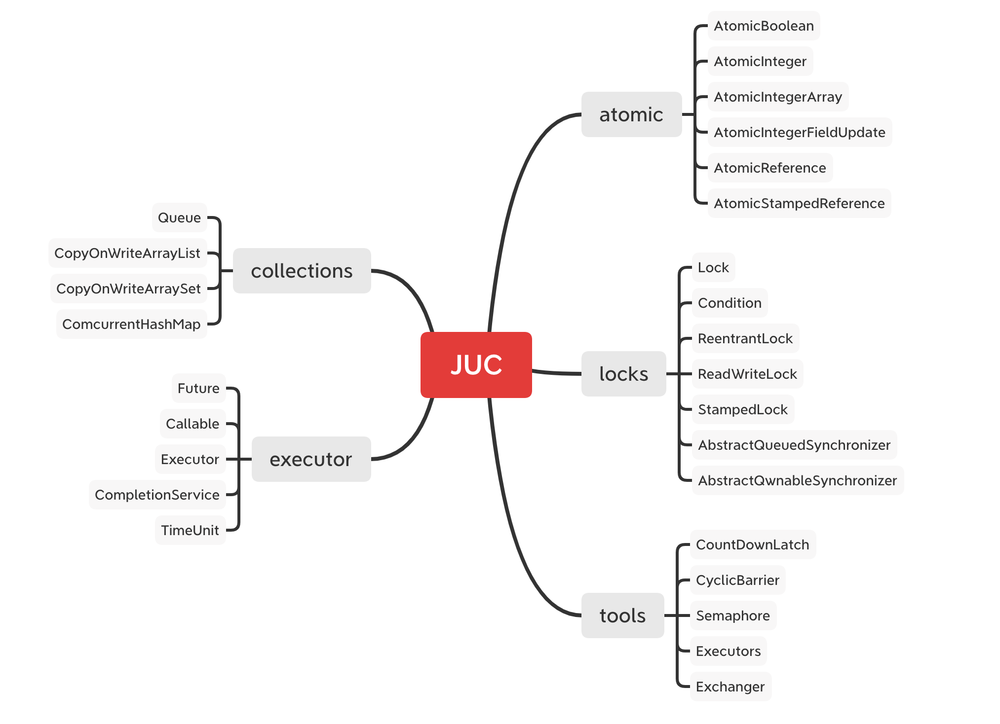
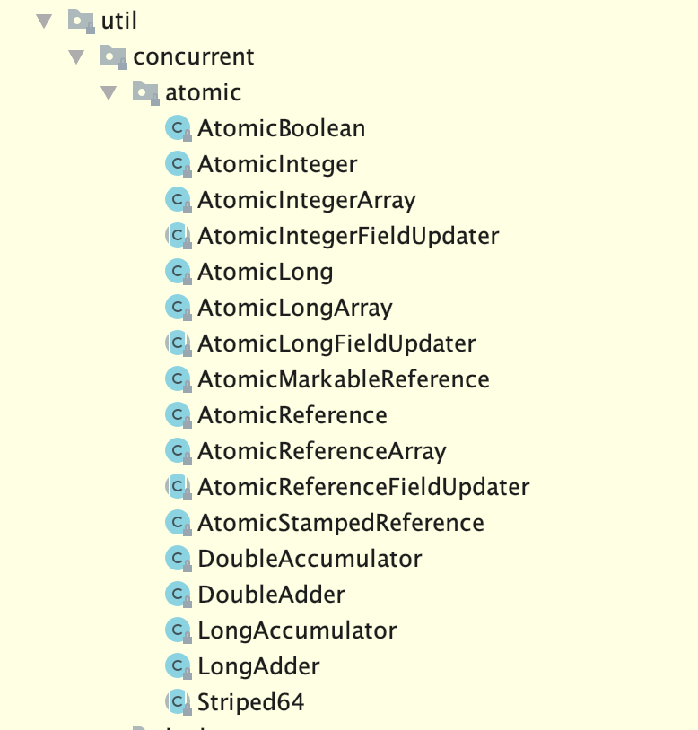
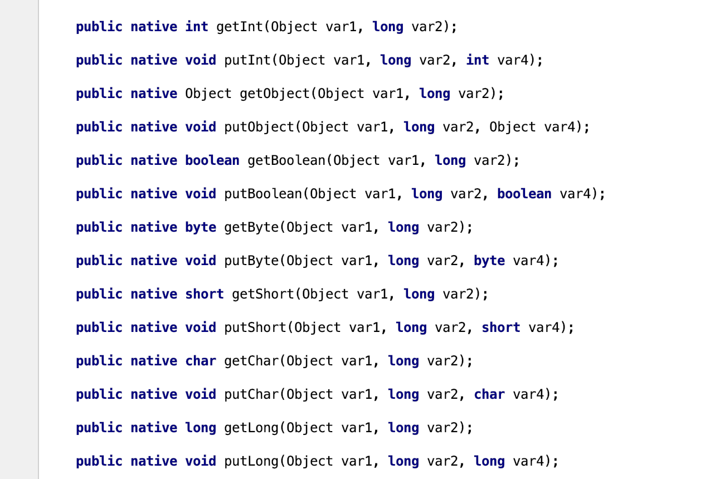

简介 学习笔记： https://www.pdai.tech/md/java/thread/java-thread-x-juc-AtomicInteger.html
JUC：指jdk里面java.util.concureent下面类库，这里面是java多线程编程基础。
思维导图如下：

本文重点介绍Atomic相关知识点，也就是java多线程编程时，如何实现原子性操作。
相关class类文件：

cpu在对多个线程进行代码执行的时候，会以原子为单位，抢占式的方式来执行代码 ，比如某个操作可以分成五个原子步骤，那么可能线程A在执行步骤1后，别的线程进来了也会执行相关代码，所以，这会引发多线程各种各样的问题。
Atomic相关类提供了复杂步骤仍然能保证以原子性执行代码，解决了多线程下无锁编程。
原子性
比如，最简单的i++,实际上可以拆分成三个原子步骤，1).i加载到内存中，2).i+1,3).把结果值赋值给i。
AtomicInteger 1 2 3 4 5 6 7 8 9 10 11 12 13 14 15 16 17 18 19 20 21 22 23 24 25 26 27 28 29 30 31 32 static class AtomicDemo { volatile int i = 0; AtomicInteger atomicInteger = new AtomicInteger(0); public void increment() { i++; atomicInteger.incrementAndGet(); } public void printValu() { System.out.println("i的值为：" + i); System.out.println("atomicInteger的值为：" + atomicInteger.get()); } } //执行： public static void main(String[] args) throws InterruptedException { AtomicDemo atomicDemo = new AtomicDemo(); for (int i = 0; i < 20; i++) { new Thread(() -> { for (int j = 0; j < 500; j++) { atomicDemo.increment(); } }).start(); } //保证循环结束了再打印 Thread.sleep(10*1000); atomicDemo.printValu(); } //输出： i的值为：9603 atomicInteger的值为：10000
Unsafe
atomicDemo.increment();是原子操作，查看源码发现，Atomic系列的源码实现都是通过Unsafe类实现的

Unsafe是位于sun.misc包下的一个类，主要提供一些用于执行低级别、不安全操作的方法，如直接访问系统内存资源、自主管理内存资源等，这些方法在提升Java运行效率、增强Java语言底层资源操作能力方面起到了很大的作用。但由于Unsafe类使Java语言拥有了类似C语言指针一样操作内存空间的能力，这无疑也增加了程序发生相关指针问题的风险。在程序中过度、不正确使用Unsafe类会使得程序出错的概率变大，使得Java这种安全的语言变得不再“安全”，因此对Unsafe的使用一定要慎重。
这个类尽管里面的方法都是 public 的，但是并没有办法使用它们，JDK API 文档也没有提供任何关于这个类的方法的解释。总而言之，对于 Unsafe 类的使用都是受限制的，只有授信的代码才能获得该类的实例，当然 JDK 库里面的类是可以随意使用的。
先来看下这张图，对Unsafe类总体功能：
如上图所示，Unsafe提供的API大致可分为内存操作、CAS、Class相关、对象操作、线程调度、系统信息获取、内存屏障、数组操作等几类。
对于开始的例子，incrementAndGet 方法，我们去看源码
1 2 3 4 5 //AtomicInteger public final int incrementAndGet() { return unsafe.getAndAddInt(this, valueOffset, 1) + 1; }
1 2 3 4 5 6 7 8 9 10 11 12 13 14 //Unsafe public final int getAndAddInt(Object var1, long var2, int var4) { int var5; do { var5 = this.getIntVolatile(var1, var2); } while(!this.compareAndSwapInt(var1, var2, var5, var5 + var4)); return var5; } public native int getIntVolatile(Object var1, long var2); public final native boolean compareAndSwapInt(Object var1, long var2, int var4, int var5);
其中，getIntVolatile和compareAndSwapInt都是native修饰的方法。
Unsafe底层 不妨再看看Unsafe的compareAndSwap*方法来实现CAS操作，它是一个本地方法，实现位于unsafe.cpp中。
1 2 3 4 5 6 7 UNSAFE_ENTRY(jboolean, Unsafe_CompareAndSwapInt(JNIEnv *env, jobject unsafe, jobject obj, jlong offset, jint e, jint x)) UnsafeWrapper("Unsafe_CompareAndSwapInt"); oop p = JNIHandles::resolve(obj); jint* addr = (jint *) index_oop_from_field_offset_long(p, offset); return (jint)(Atomic::cmpxchg(x, addr, e)) == e; UNSAFE_END
可以看到它通过 Atomic::cmpxchg 来实现比较和替换操作。其中参数x是即将更新的值，参数e是原内存的值。
如果是Linux的x86，Atomic::cmpxchg方法的实现如下：
1 2 3 4 5 6 7 8 9 inline jint Atomic::cmpxchg (jint exchange_value, volatile jint* dest, jint compare_value) { int mp = os::is_MP(); __asm__ volatile (LOCK_IF_MP(%4) "cmpxchgl %1,(%3)" : "=a" (exchange_value) : "r" (exchange_value), "a" (compare_value), "r" (dest), "r" (mp) : "cc", "memory"); return exchange_value; }
而windows的x86的实现如下：
1 2 3 4 5 6 7 8 9 10 11 12 13 14 15 16 17 18 19 inline jint Atomic::cmpxchg (jint exchange_value, volatile jint* dest, jint compare_value) { int mp = os::isMP(); //判断是否是多处理器 _asm { mov edx, dest mov ecx, exchange_value mov eax, compare_value LOCK_IF_MP(mp) cmpxchg dword ptr [edx], ecx } } // Adding a lock prefix to an instruction on MP machine // VC++ doesn't like the lock prefix to be on a single line // so we can't insert a label after the lock prefix. // By emitting a lock prefix, we can define a label after it. #define LOCK_IF_MP(mp) __asm cmp mp, 0 \ __asm je L0 \ __asm _emit 0xF0 \ __asm L0:
如果是多处理器，为cmpxchg指令添加lock前缀。反之，就省略lock前缀(单处理器会不需要lock前缀提供的内存屏障效果)。这里的lock前缀就是使用了处理器的总线锁(最新的处理器都使用缓存锁代替总线锁来提高性能)。
底层是通过lock cnpxchg指令来实现的原子操作
cmpxchg(void* ptr, int old, int new)，如果ptr和old的值一样，则把new写到ptr内存，否则返回ptr的值，整个操作是原子的Intel平台下，会用lock cmpxchg来实现，使用lock触发缓存锁，这样另一个线程想访问ptr的内存，就会被block住。
更多相关功能，推荐你看下这篇文章：来自美团技术团队：Java魔法类：Unsafe应用解析
CAS
上面提到的compareAndSwap，一般被称为CAS，是一种无锁条件下保证多线程操作的算法。
什么是CAS CAS的全称为Compare-And-Swap，直译就是对比交换。是一条CPU的原子指令，其作用是让CPU先进行比较两个值是否相等，然后原子地更新某个位置的值，经过调查发现，其实现方式是基于硬件平台的汇编指令，就是说CAS是靠硬件实现的，JVM只是封装了汇编调用，那些AtomicInteger类便是使用了这些封装后的接口。 简单解释：CAS操作需要输入两个数值，一个旧值(期望操作前的值)和一个新值，在操作期间先比较下在旧值有没有发生变化，如果没有发生变化，才交换成新值，发生了变化则不交换。
CAS操作是原子性的，所以多线程并发使用CAS更新数据时，可以不使用锁。JDK中大量使用了CAS来更新数据而防止加锁(synchronized 重量级锁)来保持原子更新。
相信sql大家都熟悉，类似sql中的条件更新一样：update set id=3 from table where id=2。因为单条sql执行具有原子性，如果有多个线程同时执行此sql语句，只有一条能更新成功
CAS 问题 CAS 方式为乐观锁，synchronized 为悲观锁。因此使用 CAS 解决并发问题通常情况下性能更优。
但使用 CAS 方式也会有几个问题：
ABA问题 因为CAS需要在操作值的时候，检查值有没有发生变化，比如没有发生变化则更新，但是如果一个值原来是A，变成了B，又变成了A，那么使用CAS进行检查时则会发现它的值没有发生变化，但是实际上却变化了。
ABA问题的解决思路就是使用版本号。在变量前面追加上版本号，每次变量更新的时候把版本号加1，那么A->B->A就会变成1A->2B->3A。
从Java 1.5开始，JDK的Atomic包里提供了一个类AtomicStampedReference来解决ABA问题。这个类的compareAndSet方法的作用是首先检查当前引用是否等于预期引用，并且检查当前标志是否等于预期标志，如果全部相等，则以原子方式将该引用和该标志的值设置为给定的更新值。
循环时间长开销大 自旋CAS如果长时间不成功，会给CPU带来非常大的执行开销。如果JVM能支持处理器提供的pause指令，那么效率会有一定的提升。pause指令有两个作用：第一，它可以延迟流水线执行命令(de-pipeline)，使CPU不会消耗过多的执行资源，延迟的时间取决于具体实现的版本，在一些处理器上延迟时间是零；第二，它可以避免在退出循环的时候因内存顺序冲突(Memory Order Violation)而引起CPU流水线被清空(CPU Pipeline Flush)，从而提高CPU的执行效率。
只能保证一个共享变量的原子操作 当对一个共享变量执行操作时，我们可以使用循环CAS的方式来保证原子操作，但是对多个共享变量操作时，循环CAS就无法保证操作的原子性，这个时候就可以用锁。
还有一个取巧的办法，就是把多个共享变量合并成一个共享变量来操作。比如，有两个共享变量i = 2，j = a，合并一下ij = 2a，然后用CAS来操作ij。
从Java 1.5开始，JDK提供了AtomicReference类来保证引用对象之间的原子性，就可以把多个变量放在一个对象里来进行CAS操作。
concurrenthashmap
concurrentHashmap是线程安全的Hashmap，相比较HashTable所有方法都用synchronize来保证线程安全，concurrentHashmap的锁机制更加高效
JDK1.7 在JDK1.5~1.7版本，Java使用了分段锁机制实现ConcurrentHashMap.
简而言之，ConcurrentHashMap在对象中保存了一个Segment数组，即将整个Hash表划分为多个分段；而每个Segment元素，即每个分段则类似于一个Hashtable；这样，在执行put操作时首先根据hash算法定位到元素属于哪个Segment，然后对该Segment加锁即可。因此，ConcurrentHashMap在多线程并发编程中可是实现多线程put操作。接下来分析JDK1.7版本中ConcurrentHashMap的实现原理。
数据结构 整个 ConcurrentHashMap 由一个个 Segment 组成，Segment 代表”部分“或”一段“的意思，所以很多地方都会将其描述为分段锁。注意，行文中，我很多地方用了“槽”来代表一个 segment。
简单理解就是，ConcurrentHashMap 是一个 Segment 数组，Segment 通过继承 ReentrantLock 来进行加锁，所以每次需要加锁的操作锁住的是一个 segment，这样只要保证每个 Segment 是线程安全的，也就实现了全局的线程安全。
concurrencyLevel: 并行级别、并发数、Segment 数，怎么翻译不重要，理解它。默认是 16，也就是说 ConcurrentHashMap 有 16 个 Segments，所以理论上，这个时候，最多可以同时支持 16 个线程并发写，只要它们的操作分别分布在不同的 Segment 上。这个值可以在初始化的时候设置为其他值，但是一旦初始化以后，它是不可以扩容的。
再具体到每个 Segment 内部，其实每个 Segment 很像之前介绍的 HashMap，不过它要保证线程安全，所以处理起来要麻烦些。
初始化
initialCapacity: 初始容量，这个值指的是整个 ConcurrentHashMap 的初始容量，实际操作的时候需要平均分给每个 Segment。
loadFactor: 负载因子，之前我们说了，Segment 数组不可以扩容，所以这个负载因子是给每个 Segment 内部使用的。
1 2 3 4 5 6 7 8 9 10 11 12 13 14 15 16 17 18 19 20 21 22 23 24 25 26 27 28 29 30 31 32 33 34 35 36 37 38 39 40 41 42 43 44 45 public ConcurrentHashMap(int initialCapacity, float loadFactor, int concurrencyLevel) { if (!(loadFactor > 0) || initialCapacity < 0 || concurrencyLevel <= 0) throw new IllegalArgumentException(); if (concurrencyLevel > MAX_SEGMENTS) concurrencyLevel = MAX_SEGMENTS; // Find power-of-two sizes best matching arguments int sshift = 0; int ssize = 1; // 计算并行级别 ssize，因为要保持并行级别是 2 的 n 次方 while (ssize < concurrencyLevel) { ++sshift; ssize <<= 1; } // 我们这里先不要那么烧脑，用默认值，concurrencyLevel 为 16，sshift 为 4 // 那么计算出 segmentShift 为 28，segmentMask 为 15，后面会用到这两个值 this.segmentShift = 32 - sshift; this.segmentMask = ssize - 1; if (initialCapacity > MAXIMUM_CAPACITY) initialCapacity = MAXIMUM_CAPACITY; // initialCapacity 是设置整个 map 初始的大小， // 这里根据 initialCapacity 计算 Segment 数组中每个位置可以分到的大小 // 如 initialCapacity 为 64，那么每个 Segment 或称之为"槽"可以分到 4 个 int c = initialCapacity / ssize; if (c * ssize < initialCapacity) ++c; // 默认 MIN_SEGMENT_TABLE_CAPACITY 是 2，这个值也是有讲究的，因为这样的话，对于具体的槽上， // 插入一个元素不至于扩容，插入第二个的时候才会扩容 int cap = MIN_SEGMENT_TABLE_CAPACITY; while (cap < c) cap <<= 1; // 创建 Segment 数组， // 并创建数组的第一个元素 segment[0] Segment<K,V> s0 = new Segment<K,V>(loadFactor, (int)(cap * loadFactor), (HashEntry<K,V>[])new HashEntry[cap]); Segment<K,V>[] ss = (Segment<K,V>[])new Segment[ssize]; // 往数组写入 segment[0] UNSAFE.putOrderedObject(ss, SBASE, s0); // ordered write of segments[0] this.segments = ss; }
初始化完成，我们得到了一个 Segment 数组。
我们就当是用 new ConcurrentHashMap() 无参构造函数进行初始化的，那么初始化完成后:
Segment 数组长度为 16，不可以扩容
Segment[i] 的默认大小为 2，负载因子是 0.75，得出初始阈值为 1.5，也就是以后插入第一个元素不会触发扩容，插入第二个会进行第一次扩容
这里初始化了 segment[0]，其他位置还是 null，至于为什么要初始化 segment[0]，后面的代码会介绍
当前 segmentShift 的值为 32 - 4 = 28，segmentMask 为 16 - 1 = 15，姑且把它们简单翻译为移位数和掩码，这两个值马上就会用到
put 过程分析 我们先看 put 的主流程，对于其中的一些关键细节操作，后面会进行详细介绍。
1 2 3 4 5 6 7 8 9 10 11 12 13 14 15 16 17 18 19 public V put(K key, V value) { Segment<K,V> s; if (value == null) throw new NullPointerException(); // 1. 计算 key 的 hash 值 int hash = hash(key); // 2. 根据 hash 值找到 Segment 数组中的位置 j // hash 是 32 位，无符号右移 segmentShift(28) 位，剩下高 4 位， // 然后和 segmentMask(15) 做一次与操作，也就是说 j 是 hash 值的高 4 位，也就是槽的数组下标 int j = (hash >>> segmentShift) & segmentMask; // 刚刚说了，初始化的时候初始化了 segment[0]，但是其他位置还是 null， // ensureSegment(j) 对 segment[j] 进行初始化 if ((s = (Segment<K,V>)UNSAFE.getObject // nonvolatile; recheck (segments, (j << SSHIFT) + SBASE)) == null) // in ensureSegment s = ensureSegment(j); // 3. 插入新值到 槽 s 中 return s.put(key, hash, value, false); }
第一层皮很简单，根据 hash 值很快就能找到相应的 Segment，之后就是 Segment 内部的 put 操作了。
Segment 内部是由 数组+链表 组成的。
1 2 3 4 5 6 7 8 9 10 11 12 13 14 15 16 17 18 19 20 21 22 23 24 25 26 27 28 29 30 31 32 33 34 35 36 37 38 39 40 41 42 43 44 45 46 47 48 49 50 51 52 53 54 55 56 57 58 59 60 final V put(K key, int hash, V value, boolean onlyIfAbsent) { // 在往该 segment 写入前，需要先获取该 segment 的独占锁 // 先看主流程，后面还会具体介绍这部分内容 HashEntry<K,V> node = tryLock() ? null : scanAndLockForPut(key, hash, value); V oldValue; try { // 这个是 segment 内部的数组 HashEntry<K,V>[] tab = table; // 再利用 hash 值，求应该放置的数组下标 int index = (tab.length - 1) & hash; // first 是数组该位置处的链表的表头 HashEntry<K,V> first = entryAt(tab, index); // 下面这串 for 循环虽然很长，不过也很好理解，想想该位置没有任何元素和已经存在一个链表这两种情况 for (HashEntry<K,V> e = first;;) { if (e != null) { K k; if ((k = e.key) == key || (e.hash == hash && key.equals(k))) { oldValue = e.value; if (!onlyIfAbsent) { // 覆盖旧值 e.value = value; ++modCount; } break; } // 继续顺着链表走 e = e.next; } else { // node 到底是不是 null，这个要看获取锁的过程，不过和这里都没有关系。 // 如果不为 null，那就直接将它设置为链表表头；如果是null，初始化并设置为链表表头。 if (node != null) node.setNext(first); else node = new HashEntry<K,V>(hash, key, value, first); int c = count + 1; // 如果超过了该 segment 的阈值，这个 segment 需要扩容 if (c > threshold && tab.length < MAXIMUM_CAPACITY) rehash(node); // 扩容后面也会具体分析 else // 没有达到阈值，将 node 放到数组 tab 的 index 位置， // 其实就是将新的节点设置成原链表的表头 setEntryAt(tab, index, node); ++modCount; count = c; oldValue = null; break; } } } finally { // 解锁 unlock(); } return oldValue; }
整体流程还是比较简单的，由于有独占锁的保护，所以 segment 内部的操作并不复杂。至于这里面的并发问题，我们稍后再进行介绍。
到这里 put 操作就结束了，接下来，我们说一说其中几步关键的操作。
初始化槽: ensureSegment ConcurrentHashMap 初始化的时候会初始化第一个槽 segment[0]，对于其他槽来说，在插入第一个值的时候进行初始化。
这里需要考虑并发，因为很可能会有多个线程同时进来初始化同一个槽 segment[k]，不过只要有一个成功了就可以。
1 2 3 4 5 6 7 8 9 10 11 12 13 14 15 16 17 18 19 20 21 22 23 24 25 26 27 28 29 30 private Segment<K,V> ensureSegment(int k) { final Segment<K,V>[] ss = this.segments; long u = (k << SSHIFT) + SBASE; // raw offset Segment<K,V> seg; if ((seg = (Segment<K,V>)UNSAFE.getObjectVolatile(ss, u)) == null) { // 这里看到为什么之前要初始化 segment[0] 了， // 使用当前 segment[0] 处的数组长度和负载因子来初始化 segment[k] // 为什么要用“当前”，因为 segment[0] 可能早就扩容过了 Segment<K,V> proto = ss[0]; int cap = proto.table.length; float lf = proto.loadFactor; int threshold = (int)(cap * lf); // 初始化 segment[k] 内部的数组 HashEntry<K,V>[] tab = (HashEntry<K,V>[])new HashEntry[cap]; if ((seg = (Segment<K,V>)UNSAFE.getObjectVolatile(ss, u)) == null) { // 再次检查一遍该槽是否被其他线程初始化了。 Segment<K,V> s = new Segment<K,V>(lf, threshold, tab); // 使用 while 循环，内部用 CAS，当前线程成功设值或其他线程成功设值后，退出 while ((seg = (Segment<K,V>)UNSAFE.getObjectVolatile(ss, u)) == null) { if (UNSAFE.compareAndSwapObject(ss, u, null, seg = s)) break; } } } return seg; }
总的来说，ensureSegment(int k) 比较简单，对于并发操作使用 CAS 进行控制。
获取写入锁: scanAndLockForPut 前面我们看到，在往某个 segment 中 put 的时候，首先会调用 node = tryLock() ? null : scanAndLockForPut(key, hash, value)，也就是说先进行一次 tryLock() 快速获取该 segment 的独占锁，如果失败，那么进入到 scanAndLockForPut 这个方法来获取锁。
下面我们来具体分析这个方法中是怎么控制加锁的。
1 2 3 4 5 6 7 8 9 10 11 12 13 14 15 16 17 18 19 20 21 22 23 24 25 26 27 28 29 30 31 32 33 34 35 36 37 38 39 40 private HashEntry<K,V> scanAndLockForPut(K key, int hash, V value) { HashEntry<K,V> first = entryForHash(this, hash); HashEntry<K,V> e = first; HashEntry<K,V> node = null; int retries = -1; // negative while locating node // 循环获取锁 while (!tryLock()) { HashEntry<K,V> f; // to recheck first below if (retries < 0) { if (e == null) { if (node == null) // speculatively create node // 进到这里说明数组该位置的链表是空的，没有任何元素 // 当然，进到这里的另一个原因是 tryLock() 失败，所以该槽存在并发，不一定是该位置 node = new HashEntry<K,V>(hash, key, value, null); retries = 0; } else if (key.equals(e.key)) retries = 0; else // 顺着链表往下走 e = e.next; } // 重试次数如果超过 MAX_SCAN_RETRIES(单核1多核64)，那么不抢了，进入到阻塞队列等待锁 // lock() 是阻塞方法，直到获取锁后返回 else if (++retries > MAX_SCAN_RETRIES) { lock(); break; } else if ((retries & 1) == 0 && // 这个时候是有大问题了，那就是有新的元素进到了链表，成为了新的表头 // 所以这边的策略是，相当于重新走一遍这个 scanAndLockForPut 方法 (f = entryForHash(this, hash)) != first) { e = first = f; // re-traverse if entry changed retries = -1; } } return node; }
这个方法有两个出口，一个是 tryLock() 成功了，循环终止，另一个就是重试次数超过了 MAX_SCAN_RETRIES，进到 lock() 方法，此方法会阻塞等待，直到成功拿到独占锁。
这个方法就是看似复杂，但是其实就是做了一件事，那就是获取该 segment 的独占锁，如果需要的话顺便实例化了一下 node。
扩容: rehash 重复一下，segment 数组不能扩容，扩容是 segment 数组某个位置内部的数组 HashEntry<K,V>[] 进行扩容，扩容后，容量为原来的 2 倍。
首先，我们要回顾一下触发扩容的地方，put 的时候，如果判断该值的插入会导致该 segment 的元素个数超过阈值，那么先进行扩容，再插值，读者这个时候可以回去 put 方法看一眼。
该方法不需要考虑并发，因为到这里的时候，是持有该 segment 的独占锁的。
1 2 3 4 5 6 7 8 9 10 11 12 13 14 15 16 17 18 19 20 21 22 23 24 25 26 27 28 29 30 31 32 33 34 35 36 37 38 39 40 41 42 43 44 45 46 47 48 49 50 51 52 53 54 55 56 57 58 59 60 61 // 方法参数上的 node 是这次扩容后，需要添加到新的数组中的数据。 private void rehash(HashEntry<K,V> node) { HashEntry<K,V>[] oldTable = table; int oldCapacity = oldTable.length; // 2 倍 int newCapacity = oldCapacity << 1; threshold = (int)(newCapacity * loadFactor); // 创建新数组 HashEntry<K,V>[] newTable = (HashEntry<K,V>[]) new HashEntry[newCapacity]; // 新的掩码，如从 16 扩容到 32，那么 sizeMask 为 31，对应二进制 ‘000...00011111’ int sizeMask = newCapacity - 1; // 遍历原数组，老套路，将原数组位置 i 处的链表拆分到 新数组位置 i 和 i+oldCap 两个位置 for (int i = 0; i < oldCapacity ; i++) { // e 是链表的第一个元素 HashEntry<K,V> e = oldTable[i]; if (e != null) { HashEntry<K,V> next = e.next; // 计算应该放置在新数组中的位置， // 假设原数组长度为 16，e 在 oldTable[3] 处，那么 idx 只可能是 3 或者是 3 + 16 = 19 int idx = e.hash & sizeMask; if (next == null) // 该位置处只有一个元素，那比较好办 newTable[idx] = e; else { // Reuse consecutive sequence at same slot // e 是链表表头 HashEntry<K,V> lastRun = e; // idx 是当前链表的头结点 e 的新位置 int lastIdx = idx; // 下面这个 for 循环会找到一个 lastRun 节点，这个节点之后的所有元素是将要放到一起的 for (HashEntry<K,V> last = next; last != null; last = last.next) { int k = last.hash & sizeMask; if (k != lastIdx) { lastIdx = k; lastRun = last; } } // 将 lastRun 及其之后的所有节点组成的这个链表放到 lastIdx 这个位置 newTable[lastIdx] = lastRun; // 下面的操作是处理 lastRun 之前的节点， // 这些节点可能分配在另一个链表中，也可能分配到上面的那个链表中 for (HashEntry<K,V> p = e; p != lastRun; p = p.next) { V v = p.value; int h = p.hash; int k = h & sizeMask; HashEntry<K,V> n = newTable[k]; newTable[k] = new HashEntry<K,V>(h, p.key, v, n); } } } } // 将新来的 node 放到新数组中刚刚的 两个链表之一 的 头部 int nodeIndex = node.hash & sizeMask; // add the new node node.setNext(newTable[nodeIndex]); newTable[nodeIndex] = node; table = newTable; }
这里的扩容比之前的 HashMap 要复杂一些，代码难懂一点。上面有两个挨着的 for 循环，第一个 for 有什么用呢?
仔细一看发现，如果没有第一个 for 循环，也是可以工作的，但是，这个 for 循环下来，如果 lastRun 的后面还有比较多的节点，那么这次就是值得的。因为我们只需要克隆 lastRun 前面的节点，后面的一串节点跟着 lastRun 走就是了，不需要做任何操作。
我觉得 Doug Lea 的这个想法也是挺有意思的，不过比较坏的情况就是每次 lastRun 都是链表的最后一个元素或者很靠后的元素，那么这次遍历就有点浪费了。不过 Doug Lea 也说了，根据统计，如果使用默认的阈值，大约只有 1/6 的节点需要克隆。
get 过程分析 相对于 put 来说，get 真的不要太简单。
计算 hash 值，找到 segment 数组中的具体位置，或我们前面用的“槽”
槽中也是一个数组，根据 hash 找到数组中具体的位置
到这里是链表了，顺着链表进行查找即可
1 2 3 4 5 6 7 8 9 10 11 12 13 14 15 16 17 18 19 20 21 public V get(Object key) { Segment<K,V> s; // manually integrate access methods to reduce overhead HashEntry<K,V>[] tab; // 1. hash 值 int h = hash(key); long u = (((h >>> segmentShift) & segmentMask) << SSHIFT) + SBASE; // 2. 根据 hash 找到对应的 segment if ((s = (Segment<K,V>)UNSAFE.getObjectVolatile(segments, u)) != null && (tab = s.table) != null) { // 3. 找到segment 内部数组相应位置的链表，遍历 for (HashEntry<K,V> e = (HashEntry<K,V>) UNSAFE.getObjectVolatile (tab, ((long)(((tab.length - 1) & h)) << TSHIFT) + TBASE); e != null; e = e.next) { K k; if ((k = e.key) == key || (e.hash == h && key.equals(k))) return e.value; } } return null; }
并发问题分析 现在我们已经说完了 put 过程和 get 过程，我们可以看到 get 过程中是没有加锁的，那自然我们就需要去考虑并发问题。
添加节点的操作 put 和删除节点的操作 remove 都是要加 segment 上的独占锁的，所以它们之间自然不会有问题，我们需要考虑的问题就是 get 的时候在同一个 segment 中发生了 put 或 remove 操作。
put 操作的线程安全性。
初始化槽，这个我们之前就说过了，使用了 CAS 来初始化 Segment 中的数组。
添加节点到链表的操作是插入到表头的，所以，如果这个时候 get 操作在链表遍历的过程已经到了中间，是不会影响的。当然，另一个并发问题就是 get 操作在 put 之后，需要保证刚刚插入表头的节点被读取，这个依赖于 setEntryAt 方法中使用的 UNSAFE.putOrderedObject。
扩容。扩容是新创建了数组，然后进行迁移数据，最后面将 newTable 设置给属性 table。所以，如果 get 操作此时也在进行，那么也没关系，如果 get 先行，那么就是在旧的 table 上做查询操作；而 put 先行，那么 put 操作的可见性保证就是 table 使用了 volatile 关键字。
remove 操作的线程安全性。
remove 操作我们没有分析源码，所以这里说的读者感兴趣的话还是需要到源码中去求实一下的。
get 操作需要遍历链表，但是 remove 操作会”破坏”链表。
如果 remove 破坏的节点 get 操作已经过去了，那么这里不存在任何问题。
如果 remove 先破坏了一个节点，分两种情况考虑。 1、如果此节点是头结点，那么需要将头结点的 next 设置为数组该位置的元素，table 虽然使用了 volatile 修饰，但是 volatile 并不能提供数组内部操作的可见性保证，所以源码中使用了 UNSAFE 来操作数组，请看方法 setEntryAt。2、如果要删除的节点不是头结点，它会将要删除节点的后继节点接到前驱节点中，这里的并发保证就是 next 属性是 volatile 的。
JDK 1.8 在JDK1.7之前，ConcurrentHashMap是通过分段锁机制来实现的，所以其最大并发度受Segment的个数限制。因此，在JDK1.8中，ConcurrentHashMap的实现原理摒弃了这种设计，而是选择了与HashMap类似的数组+链表+红黑树的方式实现，而加锁则采用CAS和synchronized实现。
数据结构
初始化 1 2 3 4 5 6 7 8 9 10 11 12 // 这构造函数里，什么都不干 public ConcurrentHashMap() { } public ConcurrentHashMap(int initialCapacity) { if (initialCapacity < 0) throw new IllegalArgumentException(); int cap = ((initialCapacity >= (MAXIMUM_CAPACITY >>> 1)) ? MAXIMUM_CAPACITY : tableSizeFor(initialCapacity + (initialCapacity >>> 1) + 1)); this.sizeCtl = cap; }
这个初始化方法有点意思，通过提供初始容量，计算了 sizeCtl，sizeCtl = 【 (1.5 * initialCapacity + 1)，然后向上取最近的 2 的 n 次方】。如 initialCapacity 为 10，那么得到 sizeCtl 为 16，如果 initialCapacity 为 11，得到 sizeCtl 为 32。
sizeCtl 这个属性使用的场景很多，不过只要跟着文章的思路来，就不会被它搞晕了。
put 过程分析 1 2 3 4 5 6 7 8 9 10 11 12 13 14 15 16 17 18 19 20 21 22 23 24 25 26 27 28 29 30 31 32 33 34 35 36 37 38 39 40 41 42 43 44 45 46 47 48 49 50 51 52 53 54 55 56 57 58 59 60 61 62 63 64 65 66 67 68 69 70 71 72 73 74 75 76 77 78 79 80 81 82 83 84 85 86 87 88 89 90 91 92 public V put(K key, V value) { return putVal(key, value, false); } final V putVal(K key, V value, boolean onlyIfAbsent) { if (key == null || value == null) throw new NullPointerException(); // 得到 hash 值 int hash = spread(key.hashCode()); // 用于记录相应链表的长度 int binCount = 0; for (Node<K,V>[] tab = table;;) { Node<K,V> f; int n, i, fh; // 如果数组"空"，进行数组初始化 if (tab == null || (n = tab.length) == 0) // 初始化数组，后面会详细介绍 tab = initTable(); // 找该 hash 值对应的数组下标，得到第一个节点 f else if ((f = tabAt(tab, i = (n - 1) & hash)) == null) { // 如果数组该位置为空， // 用一次 CAS 操作将这个新值放入其中即可，这个 put 操作差不多就结束了，可以拉到最后面了 // 如果 CAS 失败，那就是有并发操作，进到下一个循环就好了 if (casTabAt(tab, i, null, new Node<K,V>(hash, key, value, null))) break; // no lock when adding to empty bin } // hash 居然可以等于 MOVED，这个需要到后面才能看明白，不过从名字上也能猜到，肯定是因为在扩容 else if ((fh = f.hash) == MOVED) // 帮助数据迁移，这个等到看完数据迁移部分的介绍后，再理解这个就很简单了 tab = helpTransfer(tab, f); else { // 到这里就是说，f 是该位置的头结点，而且不为空 V oldVal = null; // 获取数组该位置的头结点的监视器锁 synchronized (f) { if (tabAt(tab, i) == f) { if (fh >= 0) { // 头结点的 hash 值大于 0，说明是链表 // 用于累加，记录链表的长度 binCount = 1; // 遍历链表 for (Node<K,V> e = f;; ++binCount) { K ek; // 如果发现了"相等"的 key，判断是否要进行值覆盖，然后也就可以 break 了 if (e.hash == hash && ((ek = e.key) == key || (ek != null && key.equals(ek)))) { oldVal = e.val; if (!onlyIfAbsent) e.val = value; break; } // 到了链表的最末端，将这个新值放到链表的最后面 Node<K,V> pred = e; if ((e = e.next) == null) { pred.next = new Node<K,V>(hash, key, value, null); break; } } } else if (f instanceof TreeBin) { // 红黑树 Node<K,V> p; binCount = 2; // 调用红黑树的插值方法插入新节点 if ((p = ((TreeBin<K,V>)f).putTreeVal(hash, key, value)) != null) { oldVal = p.val; if (!onlyIfAbsent) p.val = value; } } } } if (binCount != 0) { // 判断是否要将链表转换为红黑树，临界值和 HashMap 一样，也是 8 if (binCount >= TREEIFY_THRESHOLD) // 这个方法和 HashMap 中稍微有一点点不同，那就是它不是一定会进行红黑树转换， // 如果当前数组的长度小于 64，那么会选择进行数组扩容，而不是转换为红黑树 // 具体源码我们就不看了，扩容部分后面说 treeifyBin(tab, i); if (oldVal != null) return oldVal; break; } } } // addCount(1L, binCount); return null; }
初始化数组: initTable 这个比较简单，主要就是初始化一个合适大小的数组，然后会设置 sizeCtl。
初始化方法中的并发问题是通过对 sizeCtl 进行一个 CAS 操作来控制的。
final Node[] initTable() { 1 2 3 4 5 6 7 8 9 10 11 12 13 14 15 16 17 18 19 20 21 22 23 24 25 26 27 28 Node<K,V>[] tab; int sc; while ((tab = table) == null || tab.length == 0) { // 初始化的"功劳"被其他线程"抢去"了 if ((sc = sizeCtl) < 0) Thread.yield(); // lost initialization race; just spin // CAS 一下，将 sizeCtl 设置为 -1，代表抢到了锁 else if (U.compareAndSwapInt(this, SIZECTL, sc, -1)) { try { if ((tab = table) == null || tab.length == 0) { // DEFAULT_CAPACITY 默认初始容量是 16 int n = (sc > 0) ? sc : DEFAULT_CAPACITY; // 初始化数组，长度为 16 或初始化时提供的长度 Node<K,V>[] nt = (Node<K,V>[])new Node<?,?>[n]; // 将这个数组赋值给 table，table 是 volatile 的 table = tab = nt; // 如果 n 为 16 的话，那么这里 sc = 12 // 其实就是 0.75 * n sc = n - (n >>> 2); } } finally { // 设置 sizeCtl 为 sc，我们就当是 12 吧 sizeCtl = sc; } break; } } return tab; }
链表转红黑树: treeifyBin 前面我们在 put 源码分析也说过，treeifyBin 不一定就会进行红黑树转换，也可能是仅仅做数组扩容。我们还是进行源码分析吧。
1 2 3 4 5 6 7 8 9 10 11 12 13 14 15 16 17 18 19 20 21 22 23 24 25 26 27 28 29 30 31 32 33 34 private final void treeifyBin(Node<K,V>[] tab, int index) { Node<K,V> b; int n, sc; if (tab != null) { // MIN_TREEIFY_CAPACITY 为 64 // 所以，如果数组长度小于 64 的时候，其实也就是 32 或者 16 或者更小的时候，会进行数组扩容 if ((n = tab.length) < MIN_TREEIFY_CAPACITY) // 后面我们再详细分析这个方法 tryPresize(n << 1); // b 是头结点 else if ((b = tabAt(tab, index)) != null && b.hash >= 0) { // 加锁 synchronized (b) { if (tabAt(tab, index) == b) { // 下面就是遍历链表，建立一颗红黑树 TreeNode<K,V> hd = null, tl = null; for (Node<K,V> e = b; e != null; e = e.next) { TreeNode<K,V> p = new TreeNode<K,V>(e.hash, e.key, e.val, null, null); if ((p.prev = tl) == null) hd = p; else tl.next = p; tl = p; } // 将红黑树设置到数组相应位置中 setTabAt(tab, index, new TreeBin<K,V>(hd)); } } } } }
扩容: tryPresize 如果说 Java8 ConcurrentHashMap 的源码不简单，那么说的就是扩容操作和迁移操作。
这个方法要完完全全看懂还需要看之后的 transfer 方法，读者应该提前知道这点。
这里的扩容也是做翻倍扩容的，扩容后数组容量为原来的 2 倍。
1 2 3 4 5 6 7 8 9 10 11 12 13 14 15 16 17 18 19 20 21 22 23 24 25 26 27 28 29 30 31 32 33 34 35 36 37 38 39 40 41 42 43 44 45 46 47 48 49 50 51 52 // 首先要说明的是，方法参数 size 传进来的时候就已经翻了倍了 private final void tryPresize(int size) { // c: size 的 1.5 倍，再加 1，再往上取最近的 2 的 n 次方。 int c = (size >= (MAXIMUM_CAPACITY >>> 1)) ? MAXIMUM_CAPACITY : tableSizeFor(size + (size >>> 1) + 1); int sc; while ((sc = sizeCtl) >= 0) { Node<K,V>[] tab = table; int n; // 这个 if 分支和之前说的初始化数组的代码基本上是一样的，在这里，我们可以不用管这块代码 if (tab == null || (n = tab.length) == 0) { n = (sc > c) ? sc : c; if (U.compareAndSwapInt(this, SIZECTL, sc, -1)) { try { if (table == tab) { @SuppressWarnings("unchecked") Node<K,V>[] nt = (Node<K,V>[])new Node<?,?>[n]; table = nt; sc = n - (n >>> 2); // 0.75 * n } } finally { sizeCtl = sc; } } } else if (c <= sc || n >= MAXIMUM_CAPACITY) break; else if (tab == table) { // 我没看懂 rs 的真正含义是什么，不过也关系不大 int rs = resizeStamp(n); if (sc < 0) { Node<K,V>[] nt; if ((sc >>> RESIZE_STAMP_SHIFT) != rs || sc == rs + 1 || sc == rs + MAX_RESIZERS || (nt = nextTable) == null || transferIndex <= 0) break; // 2. 用 CAS 将 sizeCtl 加 1，然后执行 transfer 方法 // 此时 nextTab 不为 null if (U.compareAndSwapInt(this, SIZECTL, sc, sc + 1)) transfer(tab, nt); } // 1. 将 sizeCtl 设置为 (rs << RESIZE_STAMP_SHIFT) + 2) // 我是没看懂这个值真正的意义是什么? 不过可以计算出来的是，结果是一个比较大的负数 // 调用 transfer 方法，此时 nextTab 参数为 null else if (U.compareAndSwapInt(this, SIZECTL, sc, (rs << RESIZE_STAMP_SHIFT) + 2)) transfer(tab, null); } } }
这个方法的核心在于 sizeCtl 值的操作，首先将其设置为一个负数，然后执行 transfer(tab, null)，再下一个循环将 sizeCtl 加 1，并执行 transfer(tab, nt)，之后可能是继续 sizeCtl 加 1，并执行 transfer(tab, nt)。
所以，可能的操作就是执行 1 次 transfer(tab, null) + 多次 transfer(tab, nt)，这里怎么结束循环的需要看完 transfer 源码才清楚。
数据迁移: transfer 下面这个方法有点长，将原来的 tab 数组的元素迁移到新的 nextTab 数组中。
虽然我们之前说的 tryPresize 方法中多次调用 transfer 不涉及多线程，但是这个 transfer 方法可以在其他地方被调用，典型地，我们之前在说 put 方法的时候就说过了，请往上看 put 方法，是不是有个地方调用了 helpTransfer 方法，helpTransfer 方法会调用 transfer 方法的。
此方法支持多线程执行，外围调用此方法的时候，会保证第一个发起数据迁移的线程，nextTab 参数为 null，之后再调用此方法的时候，nextTab 不会为 null。
阅读源码之前，先要理解并发操作的机制。原数组长度为 n，所以我们有 n 个迁移任务，让每个线程每次负责一个小任务是最简单的，每做完一个任务再检测是否有其他没做完的任务，帮助迁移就可以了，而 Doug Lea 使用了一个 stride，简单理解就是步长，每个线程每次负责迁移其中的一部分，如每次迁移 16 个小任务。所以，我们就需要一个全局的调度者来安排哪个线程执行哪几个任务，这个就是属性 transferIndex 的作用。
第一个发起数据迁移的线程会将 transferIndex 指向原数组最后的位置，然后从后往前的 stride 个任务属于第一个线程，然后将 transferIndex 指向新的位置，再往前的 stride 个任务属于第二个线程，依此类推。当然，这里说的第二个线程不是真的一定指代了第二个线程，也可以是同一个线程，这个读者应该能理解吧。其实就是将一个大的迁移任务分为了一个个任务包。
1 2 3 4 5 6 7 8 9 10 11 12 13 14 15 16 17 18 19 20 21 22 23 24 25 26 27 28 29 30 31 32 33 34 35 36 37 38 39 40 41 42 43 44 45 46 47 48 49 50 51 52 53 54 55 56 57 58 59 60 61 62 63 64 65 66 67 68 69 70 71 72 73 74 75 76 77 78 79 80 81 82 83 84 85 86 87 88 89 90 91 92 93 94 95 96 97 98 99 100 101 102 103 104 105 106 107 108 109 110 111 112 113 114 115 116 117 118 119 120 121 122 123 124 125 126 127 128 129 130 131 132 133 134 135 136 137 138 139 140 141 142 143 144 145 146 147 148 149 150 151 152 153 154 155 156 157 158 159 160 161 162 163 164 165 166 167 168 169 170 171 172 173 174 175 176 177 178 179 180 181 182 183 184 185 186 187 188 189 190 191 192 193 194 195 196 197 198 199 200 private final void transfer(Node<K,V>[] tab, Node<K,V>[] nextTab) { int n = tab.length, stride; // stride 在单核下直接等于 n，多核模式下为 (n>>>3)/NCPU，最小值是 16 // stride 可以理解为”步长“，有 n 个位置是需要进行迁移的， // 将这 n 个任务分为多个任务包，每个任务包有 stride 个任务 if ((stride = (NCPU > 1) ? (n >>> 3) / NCPU : n) < MIN_TRANSFER_STRIDE) stride = MIN_TRANSFER_STRIDE; // subdivide range // 如果 nextTab 为 null，先进行一次初始化 // 前面我们说了，外围会保证第一个发起迁移的线程调用此方法时，参数 nextTab 为 null // 之后参与迁移的线程调用此方法时，nextTab 不会为 null if (nextTab == null) { try { // 容量翻倍 Node<K,V>[] nt = (Node<K,V>[])new Node<?,?>[n << 1]; nextTab = nt; } catch (Throwable ex) { // try to cope with OOME sizeCtl = Integer.MAX_VALUE; return; } // nextTable 是 ConcurrentHashMap 中的属性 nextTable = nextTab; // transferIndex 也是 ConcurrentHashMap 的属性，用于控制迁移的位置 transferIndex = n; } int nextn = nextTab.length; // ForwardingNode 翻译过来就是正在被迁移的 Node // 这个构造方法会生成一个Node，key、value 和 next 都为 null，关键是 hash 为 MOVED // 后面我们会看到，原数组中位置 i 处的节点完成迁移工作后， // 就会将位置 i 处设置为这个 ForwardingNode，用来告诉其他线程该位置已经处理过了 // 所以它其实相当于是一个标志。 ForwardingNode<K,V> fwd = new ForwardingNode<K,V>(nextTab); // advance 指的是做完了一个位置的迁移工作，可以准备做下一个位置的了 boolean advance = true; boolean finishing = false; // to ensure sweep before committing nextTab /* * 下面这个 for 循环，最难理解的在前面，而要看懂它们，应该先看懂后面的，然后再倒回来看 * */ // i 是位置索引，bound 是边界，注意是从后往前 for (int i = 0, bound = 0;;) { Node<K,V> f; int fh; // 下面这个 while 真的是不好理解 // advance 为 true 表示可以进行下一个位置的迁移了 // 简单理解结局: i 指向了 transferIndex，bound 指向了 transferIndex-stride while (advance) { int nextIndex, nextBound; if (--i >= bound || finishing) advance = false; // 将 transferIndex 值赋给 nextIndex // 这里 transferIndex 一旦小于等于 0，说明原数组的所有位置都有相应的线程去处理了 else if ((nextIndex = transferIndex) <= 0) { i = -1; advance = false; } else if (U.compareAndSwapInt (this, TRANSFERINDEX, nextIndex, nextBound = (nextIndex > stride ? nextIndex - stride : 0))) { // 看括号中的代码，nextBound 是这次迁移任务的边界，注意，是从后往前 bound = nextBound; i = nextIndex - 1; advance = false; } } if (i < 0 || i >= n || i + n >= nextn) { int sc; if (finishing) { // 所有的迁移操作已经完成 nextTable = null; // 将新的 nextTab 赋值给 table 属性，完成迁移 table = nextTab; // 重新计算 sizeCtl: n 是原数组长度，所以 sizeCtl 得出的值将是新数组长度的 0.75 倍 sizeCtl = (n << 1) - (n >>> 1); return; } // 之前我们说过，sizeCtl 在迁移前会设置为 (rs << RESIZE_STAMP_SHIFT) + 2 // 然后，每有一个线程参与迁移就会将 sizeCtl 加 1， // 这里使用 CAS 操作对 sizeCtl 进行减 1，代表做完了属于自己的任务 if (U.compareAndSwapInt(this, SIZECTL, sc = sizeCtl, sc - 1)) { // 任务结束，方法退出 if ((sc - 2) != resizeStamp(n) << RESIZE_STAMP_SHIFT) return; // 到这里，说明 (sc - 2) == resizeStamp(n) << RESIZE_STAMP_SHIFT， // 也就是说，所有的迁移任务都做完了，也就会进入到上面的 if(finishing){} 分支了 finishing = advance = true; i = n; // recheck before commit } } // 如果位置 i 处是空的，没有任何节点，那么放入刚刚初始化的 ForwardingNode ”空节点“ else if ((f = tabAt(tab, i)) == null) advance = casTabAt(tab, i, null, fwd); // 该位置处是一个 ForwardingNode，代表该位置已经迁移过了 else if ((fh = f.hash) == MOVED) advance = true; // already processed else { // 对数组该位置处的结点加锁，开始处理数组该位置处的迁移工作 synchronized (f) { if (tabAt(tab, i) == f) { Node<K,V> ln, hn; // 头结点的 hash 大于 0，说明是链表的 Node 节点 if (fh >= 0) { // 下面这一块和 Java7 中的 ConcurrentHashMap 迁移是差不多的， // 需要将链表一分为二， // 找到原链表中的 lastRun，然后 lastRun 及其之后的节点是一起进行迁移的 // lastRun 之前的节点需要进行克隆，然后分到两个链表中 int runBit = fh & n; Node<K,V> lastRun = f; for (Node<K,V> p = f.next; p != null; p = p.next) { int b = p.hash & n; if (b != runBit) { runBit = b; lastRun = p; } } if (runBit == 0) { ln = lastRun; hn = null; } else { hn = lastRun; ln = null; } for (Node<K,V> p = f; p != lastRun; p = p.next) { int ph = p.hash; K pk = p.key; V pv = p.val; if ((ph & n) == 0) ln = new Node<K,V>(ph, pk, pv, ln); else hn = new Node<K,V>(ph, pk, pv, hn); } // 其中的一个链表放在新数组的位置 i setTabAt(nextTab, i, ln); // 另一个链表放在新数组的位置 i+n setTabAt(nextTab, i + n, hn); // 将原数组该位置处设置为 fwd，代表该位置已经处理完毕， // 其他线程一旦看到该位置的 hash 值为 MOVED，就不会进行迁移了 setTabAt(tab, i, fwd); // advance 设置为 true，代表该位置已经迁移完毕 advance = true; } else if (f instanceof TreeBin) { // 红黑树的迁移 TreeBin<K,V> t = (TreeBin<K,V>)f; TreeNode<K,V> lo = null, loTail = null; TreeNode<K,V> hi = null, hiTail = null; int lc = 0, hc = 0; for (Node<K,V> e = t.first; e != null; e = e.next) { int h = e.hash; TreeNode<K,V> p = new TreeNode<K,V> (h, e.key, e.val, null, null); if ((h & n) == 0) { if ((p.prev = loTail) == null) lo = p; else loTail.next = p; loTail = p; ++lc; } else { if ((p.prev = hiTail) == null) hi = p; else hiTail.next = p; hiTail = p; ++hc; } } // 如果一分为二后，节点数少于 8，那么将红黑树转换回链表 ln = (lc <= UNTREEIFY_THRESHOLD) ? untreeify(lo) : (hc != 0) ? new TreeBin<K,V>(lo) : t; hn = (hc <= UNTREEIFY_THRESHOLD) ? untreeify(hi) : (lc != 0) ? new TreeBin<K,V>(hi) : t; // 将 ln 放置在新数组的位置 i setTabAt(nextTab, i, ln); // 将 hn 放置在新数组的位置 i+n setTabAt(nextTab, i + n, hn); // 将原数组该位置处设置为 fwd，代表该位置已经处理完毕， // 其他线程一旦看到该位置的 hash 值为 MOVED，就不会进行迁移了 setTabAt(tab, i, fwd); // advance 设置为 true，代表该位置已经迁移完毕 advance = true; } } } } } }
说到底，transfer 这个方法并没有实现所有的迁移任务，每次调用这个方法只实现了 transferIndex 往前 stride 个位置的迁移工作，其他的需要由外围来控制。
这个时候，再回去仔细看 tryPresize 方法可能就会更加清晰一些了。
get 过程分析 get 方法从来都是最简单的，这里也不例外:
计算 hash 值
根据 hash 值找到数组对应位置: (n - 1) & h
根据该位置处结点性质进行相应查找
如果该位置为 null，那么直接返回 null 就可以了
如果该位置处的节点刚好就是我们需要的，返回该节点的值即可
如果该位置节点的 hash 值小于 0，说明正在扩容，或者是红黑树，后面我们再介绍 find 方法
如果以上 3 条都不满足，那就是链表，进行遍历比对即可
1 2 3 4 5 6 7 8 9 10 11 12 13 14 15 16 17 18 19 20 21 22 23 24 25 public V get(Object key) { Node<K,V>[] tab; Node<K,V> e, p; int n, eh; K ek; int h = spread(key.hashCode()); if ((tab = table) != null && (n = tab.length) > 0 && (e = tabAt(tab, (n - 1) & h)) != null) { // 判断头结点是否就是我们需要的节点 if ((eh = e.hash) == h) { if ((ek = e.key) == key || (ek != null && key.equals(ek))) return e.val; } // 如果头结点的 hash 小于 0，说明 正在扩容，或者该位置是红黑树 else if (eh < 0) // 参考 ForwardingNode.find(int h, Object k) 和 TreeBin.find(int h, Object k) return (p = e.find(h, key)) != null ? p.val : null; // 遍历链表 while ((e = e.next) != null) { if (e.hash == h && ((ek = e.key) == key || (ek != null && key.equals(ek)))) return e.val; } } return null; }
简单说一句，此方法的大部分内容都很简单，只有正好碰到扩容的情况，ForwardingNode.find(int h, Object k) 稍微复杂一些，不过在了解了数据迁移的过程后，这个也就不难了，所以限于篇幅这里也不展开说了。
对比总结
HashTable : 使用了synchronized关键字对put等操作进行加锁;ConcurrentHashMap JDK1.7: 使用分段锁机制实现;ConcurrentHashMap JDK1.8: 则使用数组+链表+红黑树数据结构和CAS原子操作实现;